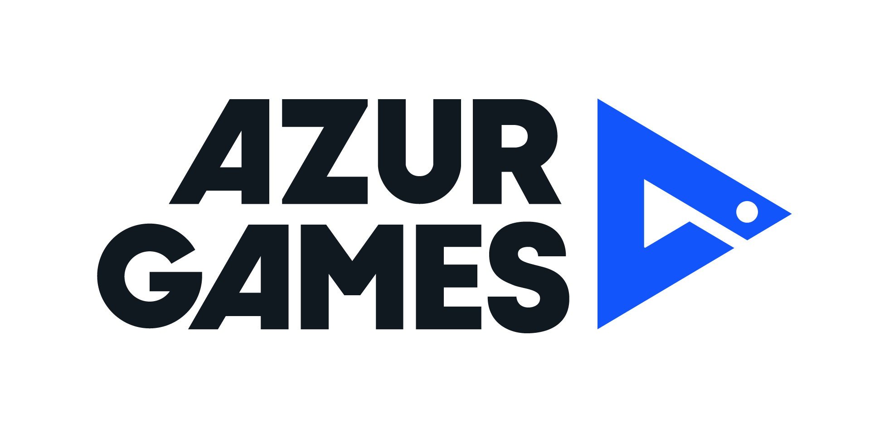

2DVFX
Merge Farm
Cozy isometric merge with a snappy freeze-VFX hook. Stylized 2D, tuned to load instantly.
PreviewHi, I'm Katia. This page is the quick version of my work, so you can decide if we're a good fit before we ever talk — part nerdy experiments with light and shaders, part two years of shipping real, optimized work.
I'm a 2D Technical Artist who lives right where art meets engineering — that's the part I love. I got here the self-taught way, starting from a Unity platformer I coded, designed and built just to learn, and still tinker with today. Then I spent two years in mobile marketing shipping 100+ playable ads, writing custom HLSL/CG shaders, rigging in Spine, and building the tooling that keeps a team moving. I chase real performance budgets without ever letting the visuals suffer.

Two years at Azur Games, building, optimizing and visually leveling up 100+ playable ads across genres — all squeezed under a hard 4 MB budget without dulling the visuals. Custom HLSL/CG shaders, lightweight 2D VFX and Spine animation, plus the tooling and docs that kept the whole team faster. All of it shaped shoulder-to-shoulder with developers and artists.
Cozy isometric merge with a snappy freeze-VFX hook. Stylized 2D, tuned to load instantly.
PreviewColor-blast puzzle that paints a picture as you pop. Crisp UI, tiny footprint.
PreviewMinimal flat-art hyper-casual with soft snow VFX and clean, readable motion.
PreviewSwipe-to-fill pattern puzzle — a playful reveal that stays readable at a glance.
PreviewNeon arcade maze where glow trails and 2D lighting carry the entire mood.
PreviewSpot-the-difference playable — bright 2D scenes and frictionless UI.
PreviewMap-routing puzzle with clean line rendering and a calm, uncluttered UI.
PreviewCastle-defense action with crackling lightning VFX and a punchy first-second hook.
PreviewSide-scroller with parallax city backdrops building up to a boss-fight beat.
PreviewRenovation story game — richly illustrated scenes and a satisfying match/choose loop.
PreviewThe kind of behind-the-scenes work I quietly love: a Notion knowledge base I architected for Tank Stars — a full Spine tank library, per-tank Spine-to-Unity files, and a VFX catalog. Standardized references like this cut artist and developer time by 10–20%.
The work I make when nobody's setting the brief — where I get to design, code and experiment freely, break things on purpose, and figure out the techniques I later bring to work.
My longest-running pet project and the reason I fell into all of this: a Unity platformer I code, design and build myself. It's my sandbox for mechanics experiments and cleaner code architecture — less a finished game than a sketchbook that happens to run, and it's still growing.
A Unity top-down wave-survival action game I'm building end to end — glowing 2D-lit crystals, a punchy combat loop, and a rarity-framed "choose your build" class UI that I'm a little too proud of. Game design, visuals and experiments in one place.
My playground for highly configurable HLSL/CG shaders, 2D lighting and custom VFX — where I poke at frost, neon glow, snow and lightning until they look exactly the way I imagined. Pure curiosity that often finds its way into real projects.
The tiles below are live shaders rendering in your browser right now — drop in your own captures any time.
If any of this clicks — hiring, collaborating, or you just want to talk shaders — I'd love to hear from you. Email is fastest, and I'm on LinkedIn, Telegram and GitHub too.
Tbilisi, Georgia